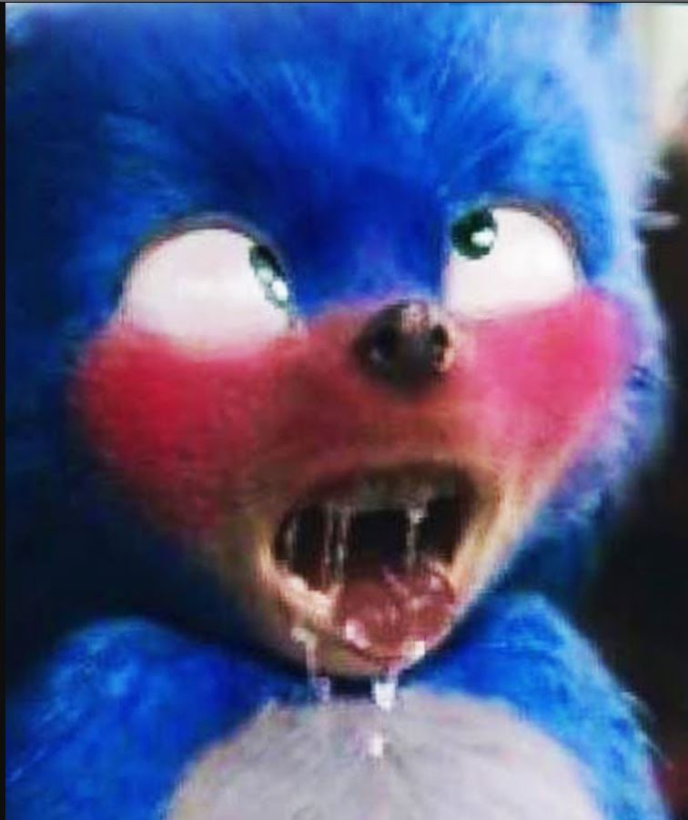
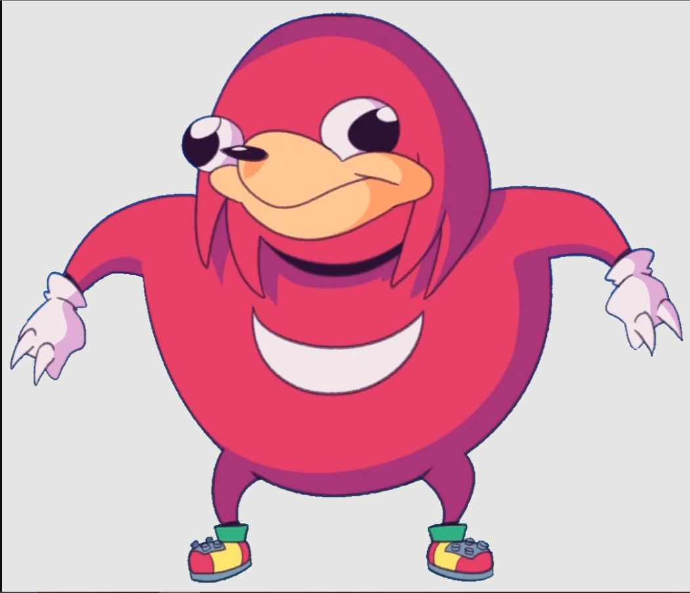
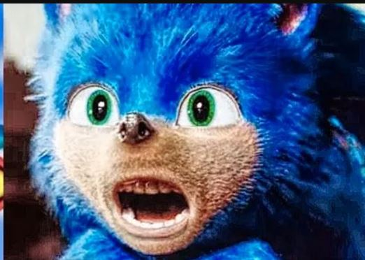

Conceito e criação
Enquanto várias pessoas estiveram envolvidas na criação de Sonic, o artista Naoto Ohshima , o programador Yuji Naka e o designer Hirokazu Yasuhara são geralmente creditados com a criação do personagem.
Em abril de 1990, a Sega solicitou um jogo capaz de vender mais de 1.000.000 de cópias; um personagem que poderia competir contra o Super Mario da Nintendo e um personagem para substituir Alex Kidd como mascote da empresa. Vários designs de personagens foram apresentados pelo departamento de pesquisa e desenvolvimento da AM8 . Estes incluíam um tatu (que mais tarde foi desenvolvido em Mighty the Armadillo ), um cachorro, um homem de bigode curto de pijama (que mais tarde foi usado como base do projeto do principal antagonista Dr. Eggman ) e um coelho (que usaria suas orelhas extensíveis para coletar objetos, uma ideia que mais tarde foi usada para um personagem separado da Sega chamado Ristar ). Eventualmente, o mascote que eles selecionaram foi a submissão de Naoto Ohshima , um ouriço espetado com o codinome "Mr. Hedgehog" ( Mr. ハリネズミMr. Harinezumi ? ) , mais tarde renomeado para Sonic . Idéias iniciais para nomes para Sonic incluíam "Raisupi" e "LS", e truncamento e brincadeiras com a palavra "velocidade da luz". No entanto, devido a um erro de tradução das notas de Ohshima por fãs de língua inglesa, acreditava-se que o nome de desenvolvimento original de Sonic era "Mr. Needlemouse" até ser corrigido por Yuji Naka em 24 de janeiro de 2021.
A cor de Sonic foi baseada no logotipo da Sega, seu design de sapato baseado em Michael Jackson , sua cor de sapato baseada em Papai Noel , e sua personalidade inspirada na atitude do futuro presidente Bill Clinton , a quem Ohshima sentiu encarnado um moderno sensibilidade de querer fazer as coisas imediatamente, corrigindo os erros à medida que se apresentavam, em vez de deixá-los demorar. De acordo com Yuji Naka, a cor de Sonic também serve para simbolizar paz, confiança e frieza, os atributos do personagem de Sonic. Sua velocidade de marca registrada é baseada em Super Mario Bros. World 1-1 , com o criador do Sonic, Yuji Naka, afirmando na edição 260 doNintendo Power que "eu sempre tentei passar de nível o mais rápido que pude", que inspirou o conceito inicial de Sonic the Hedgehog. Sonic foi criado sem a capacidade de nadar por causa de uma suposição equivocada de Yuji Naka de que todos os ouriços não poderiam fazê-lo.
Um grupo de quinze começou a trabalhar em Sonic the Hedgehog e renomeou-se Sonic Team . A trilha sonora do jogo foi composta por Masato Nakamura da banda Dreams Come True . A Sega patrocinou a turnê "Wonder 3" do grupo, pintando Sonic no ônibus da turnê, distribuindo panfletos anunciando o jogo e tendo imagens do jogo transmitidas acima do palco antes de seu lançamento.
Os conceitos originais deram a Sonic presas e o colocaram em uma banda com uma namorada humana chamada Madonna . No entanto, uma equipe da Sega of America , liderada por Madeline Schroeder , "suavizou" o personagem para o público americano removendo esses elementos. Isso provocou um problema acalorado com o Sonic Team. Naka mais tarde admitiu que provavelmente era o melhor. [ carece de fontes ] A idade precisa, peso, altura e outras características físicas de Sonic variam dependendo da continuidade em que ele aparece e do estilo em que é desenhado. Nos videogames, o design original de Sonic por Naoto Ohshimaestava com pontas curtas, um corpo redondo e sem íris visíveis. A arte com este design e desenhada por Akira Watanabe foi exibida na arte do pacote para Sonic the Hedgehog e a maioria dos videogames subsequentes do Sonic apresentavam designs semelhantes. Quando Sonic the Hedgehog 2 para o Mega Drive (conhecido como Sega Genesis em territórios americanos) apareceu, as proporções de Sonic mudaram. A proporção original de 1:2 cabeça para altura mudou para 1:2,5.
Começando com Sonic Adventure em 1998, Sonic foi redesenhado por Yuji Uekawa como um personagem de 15 anos, com pernas mais longas e um corpo menos esférico, pontas mais longas e mais caídas e olhos verde-esmeralda. A razão para essa cor para seus olhos era contrastar com o resto de seu esquema de cores, mas também, de acordo com Uekawa, "porque ele está sempre vendo esses pastos verdes ao seu redor, como na Green Hill Zone". Sonic também foi propositalmente mais um "bad boy" para Sonic Adventure , para que seu personagem não se tornasse muito fofo como tantos outros mascotes de personagens (Yuji Naka afirmou que a Hello Kitty já possuía o mercado de fofura). Outras mudanças no design do personagem foram feitas em jogos subsequentes, nomeadamente em Shadow the Hedgehog e Sonic the Hedgehog (2006) , adicionando peles visíveis, um design mais realista para um mundo humano e tornando-o um pouco mais esguio.
Em relação ao aniversário de Sonic , foi Yuji Naka quem decidiu fazê-lo em 23 de junho (o mesmo dia do lançamento do Sonic the Hedgehog original nos territórios ocidentais).
Voltar ao Topo
Jogos ja produzidos
Mega Drive/Genesis:
- Sonic the Hedgehog (1991) - Estrelado - Sonic/Eggman
- Sonic Eraser (1991) - Estrelado - Sonic
- Sonic the Hedgehog 2 (1992) - Estrelado - Sonic/Tails/Eggman
- Dr. Robotnik's Mean Bean Machine (1993) - Estrelado - Eggman
- Sonic Spinball (1993) - Estrelado - Sonic/Tails/Eggman/Sally
- Sonic the Hedgehog 3 (1994) - Estrelado - Sonic/Knuckles/Tails/Eggman
- Sonic & Knuckles (1994) - Estrelado - Sonic/Knuckles/Eggman/Mecha Sonic/Egg Robo
- Sonic 2 & Knuckles (1994) - Estrelado - Knuckles/Tails/Eggman/Silver Sonic
- Sonic 3 & Knuckles (1994) - Estrelado - Sonic/Knuckles/Tails/Eggman/Mecha Sonic/Egg Robo
- Sonic Special Stages (1994) - Estrelado - Sonic/Tails/Knuckles/Eggman
- Wacky Worlds (1994) - Paticipação - Sonic/Tails
- Sonic 3D Blast (1996) - Estrelado - Sonic/Tails/Knuckles/Eggman
- Sonic Compilation (1995) - Estrelado - Sonic/Tails/Eggman
Voltar ao Topo
Personagens
Sonic Humano:

O terrível Sonic humano que amedronta todos os fans de sonic, pois ele tinha boca e dentes ...
Sonic Nicolas Cage:
O melhor Sonic já inventado e interpretado nos cinemas, agradou todos os fans porem não foi aplicado ao filme Sonic move pois a direção queria algo mais fofinho.
Sonic Ahegao:

Os fans queriam algo fofinho a comunidade deu a solução, porem a direção do filme acreditou que ficou fofinho de mais ...
Knuckles de Uganda:

Simplesmente o herói de toda a saga ! WHERE IS DA QUEEN? Or DO YOU KNOW THE WAY? ...
Estas são as frases do verdadeiro guerreiro de Uganda Knuckles.
Tails
Tails o fiel companheiro do Sonic ajudando sempre em sua jornada, porém depois de morrer algumas vezes por não ter bolha de ar para dois apenas um nas fazes aquáticas ficou com um pouco de depressão.
Robotinik:
Todo mundo reclamou da versão magra, porem aprendemos claramente que haters são lixos pois reclamou do visual dele e no final foi mostrado a épica versão do Dr. Robotinik ou seja a versão magra era um background e os boçais não tiveram tempo para ver antes de reclamar
Voltar ao Topo
Galeria
Algumas imagens do nosso herois e suas sagas:

Voltar ao Topo
Mande sua cartinha
Mande sua cartinha para a gente amiguinho !
Contato:
Voltar ao Topo
Rodapé da Página:
Portal do Sonic
Conceito e criação |
Jogos ja produzidos |
Personagens |
Galeria de fotos |
Mande sua cartinha |
Topo da página